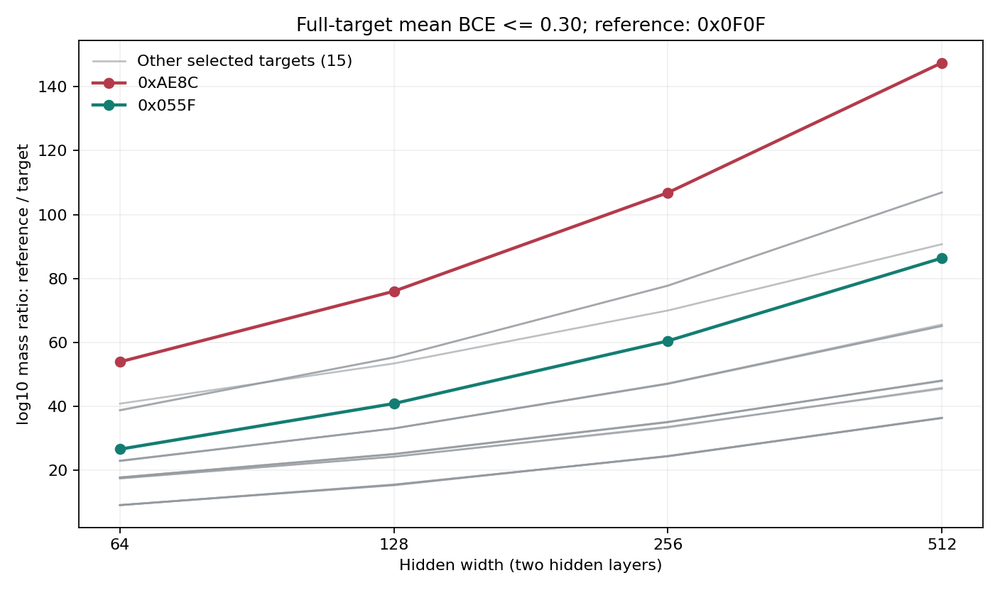
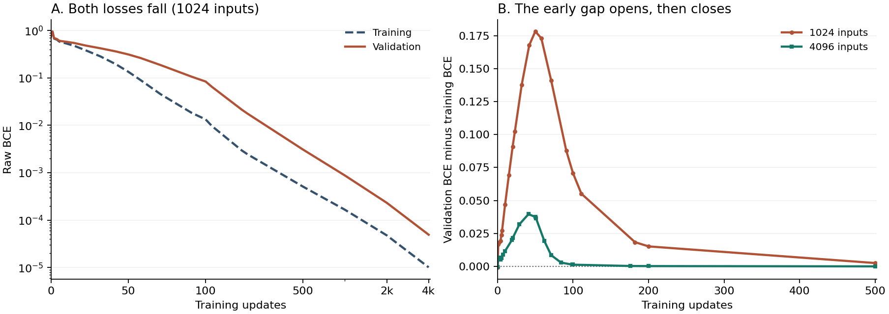
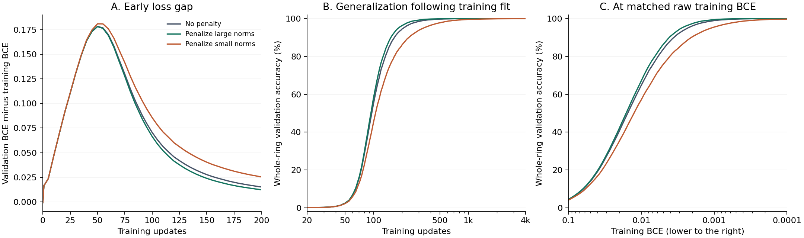

Date: 2026-10-21. Status: website explanation and evidence draft incorporating the completed width/depth SMC results; for the Chinese and English websites only, not the formal papers or PDFs. The unified account remains a conditional mechanism, not a proven causal law for every double-descent curve. All planned SMC runs are complete; the existing MNIST training scan has saved only 13 of 14 planned conditions and remains an unfinished, literature-inspired attempt to reproduce the phenomenon. This update launches no new experiments.
The central account of this draft places capacity-wise and training-time double descent within the same picture of selection. Earlier behavior is dominated by overcoming underfitting and eliminating simple shortcuts that cannot satisfy the data; later, once the training set is sufficiently fitted, stronger simplicity selection among compatible implementations can improve extensions to unseen inputs. The two effects can coexist: the stages describe changes in which effect dominates, not the first appearance of simplicity bias late in training.
Neither axis requires abandoning training-set fit during the second descent: longer training and larger networks can continue satisfying the same training set while selecting functions with different generalization. The width experiments examine whether the relative mass gap between simple and complex targets grows, providing static evidence for the capacity-wise account; the training-time account connects to earlier experiments on training constraints and shortcut interventions, functional migration after hard fit, and candidate-mass redistribution. In the completed SMC scan, at the common BCE threshold of 0.30, the mass disadvantage of all 17 selected non-single-bit rules relative to the same single-bit rule increases across the four widths. This supports a change in relative preference under the specified protocol, but does not yet establish a causal correspondence between full-target volume and an actual double-descent curve on the same finite training set.
1. Two aspects of changing width
Increasing network capacity can make a task accessible that was previously difficult to represent or fit within a given training budget. It can also change the relative parameter mass of different rules that are already realizable. These aspects require separate measurements.
Fix depth, input and output encoding, the construction of the reference parameter distribution, and the loss event. At width W, write the full-target mass as
For a prespecified simple rule s and complex rule c, define
A growing gap therefore means a stronger mass advantage for the simple target relative to the complex target under this comparison protocol. It does not require the simple target's absolute mass to increase. Parameter spaces at different widths have different dimensions; each reference measure must be normalized separately, and parameterization rules such as fan-in scaling must be recorded.
1.1 Cross-dimensional comparison takes place in a common output space
Each network in this scan outputs 16 logits for the same 16 inputs. Although their parameter spaces have different dimensions, they induce distributions on the same 16-dimensional joint-output space:
The same rule and threshold specify the same output event, so the probabilities that different networks assign to that event can be compared. The object of comparison is the preference of different neural generative mechanisms for the same requirement, not a direct ratio of unnormalized Euclidean volumes in different dimensions.
However, a relative volume ratio removes only an overall normalization factor, not the effect of redistributing measure across regions. What is held common here is the construction rule of uniform sampling in normalized parameters and fan-in scaling; biases in later layers also scale with width. The intervention therefore changes width together with its associated parameterization and reference measure. The conclusion concerns relative preferences in this protocol family, not a measure-independent law of objective complexity or a necessary effect of adding neurons alone.
A full-target average-loss event can contain parameters with some incorrect hard labels at general thresholds. Calling it the mass of the target hard cell requires an additional guarantee or direct verification; the initialization prior over hard functions cannot replace this full-target profile either.
2. A mechanism intuition about redundant implementations
The researcher's intuition is that, when resources are ample, computations with looser constraints and greater sharing may allow new degrees of freedom to participate in more ways of distributing, substituting, and reorganizing computation. They may consequently gain more relative implementation mass. Computations that require more precise coordination can also benefit, but their multiplicative gain may be smaller.
This intuition accommodates two observations: complex tasks may lose accessibility first when a network is narrowed toward its capacity boundary; once simple and complex tasks are both accessible, further widening may favor the relative mass of simple tasks.
New parameters do not automatically confer probability mass. Completely free additional coordinates expand the event and the total space together under a normalized measure; preserving an existing function with new neurons can also require disabling, cancellation, or coordination. The asymmetry in the gains of different rules is what needs explanation.
This experiment neither directly counts such functional decompositions nor proves the source of coordination costs; it measures changes in the relative mass of continuous-loss events. The redundant-implementation account remains a mechanism intuition requiring further constraints.
3. Connecting capacity and training-time double descent
Earlier loss studies distinguished two effects that can occur together: low-cost shortcuts insufficient for the current constraints are eliminated; among implementations that remain compatible, function-dependent mass redistribution occurs and favors candidates with lower reference costs under some protocols. This draft uses those effects to explain double descent, rather than describing the entire process as continuously increasing or decreasing function complexity.
3.1 The shared premise is maintaining training-set fit in the later regime
In the second-descent regime being explained, the training set is already sufficiently fitted and remains fitted with further training or increased capacity. Improvement occurs among different extensions satisfying the training constraints, rather than through a return to underfitting.
"Sufficiently simple" here means more economical relative to the current training constraints, not unconditionally selecting a constant function or ignoring difficult examples. If training labels contain noise, compatible solutions in the later regime must still satisfy the actual training labels. A possible improvement is that shared structure plus sample-specific exceptions is more economical than an extension globally distorted by sample details, not that the model forgets noise and sacrifices training accuracy again. Which extension is more economical and whether the optimizer can reach it remain protocol-dependent.
The common picture can be divided into three observable regimes:
| Test-error stage | Account along the capacity axis | Account along the training-time axis |
|---|---|---|
| First descent | Widening makes useful structure easier to represent and learn, reducing underfitting | Useful shared structure or approximate rules are learned from the initial state |
| Intermediate rise | Near the fitting boundary, more sample details can be fitted, but the extensions selected temporarily may generalize worse | Stricter fitting requirements eliminate insufficient shortcuts, and their replacements may temporarily rely more on sample-specific details |
| Second descent | While maintaining training fit, further widening can improve extensions if it increases the relative advantage of economical compatible solutions | While maintaining training fit, continued tightening of continuous output requirements can improve extensions if it strengthens the advantage of economical compatible solutions |
3.2 Why the training-time axis connects directly to the existing theory
Simple early behavior need not be useless. An imperfect approximate rule can capture much of the shared structure first, reducing training and test error together. During further fitting, a rule with irreducible errors on some training points cannot lower loss indefinitely and must exit or be modified. As these additional details are satisfied, transient extensions may become more dependent on particular samples, producing an increase in test error. Shortcut exit alone does not guarantee this rise: the replacement must also perform worse on unseen inputs.
Hard fit does not leave only one function compatible with the classification labels. Different compatible functions still have different continuous implementations; within the BCE windows studied, further loss reduction can change their relative mass, with some more economical extensions gaining dominance. Actual training has also exhibited functional migration while preserving training fit. Longer training therefore need not mean only an ever-growing memorization burden: it can also change the rule on unseen inputs while maintaining fit.
This connects training-time double descent naturally to the existing framework: the first descent comes from learning useful structure, the intermediate rise can come from poor extensions while satisfying more training details, and the second descent can come from further strengthening of simplicity selection among compatible solutions. This account neither equates training time with a static temperature nor assumes that SGD samples the constrained reference measure at every moment. With amplitude regularization or other losses, the full output constraints must be considered rather than replaced by a single average BCE value.
Can we study the last step on its own? The Rule30 training and validation curves give an example without injected label noise: the network gets the training set entirely right well before it does the same on validation. This isolates the question of late improvement without requiring a full double-descent curve.
3.3 The capacity axis is another path through the same selection picture
Early widening first changes expressivity and accessibility within a finite training budget, allowing previously unsatisfied constraints to be met more fully. Near the fitting boundary, being able to memorize more training details does not imply that the best extension to unseen inputs has already been selected. If fitting temporarily relies on implementations more sensitive to sample details, test error can increase.
Once capacity is sufficient, further widening does not revoke the training-set constraints. This sufficiently fitted regime is precisely the focus here: if a larger network gives economical compatible solutions a greater mass advantage over complex compatible solutions, and that advantage matters in actual training, test error can decrease again. The simple target's absolute mass need not increase, and absolute K values at different widths are not treated as a universal scale of intrinsic task complexity.
Changing capacity is not equivalent to lowering a loss threshold in the same parameter space, so the set-filtering process along the time axis cannot be transferred literally. What the two axes share is the relationship between satisfying data constraints and selecting among compatible solutions: the time axis changes the training state and continuous output requirements of the same network; the capacity axis changes accessible implementations and their relative mass. Both require distinguishing fit from extension, and neither explains later improvement by sacrificing training-set fit.
3.4 Explanatory contribution and evidence levels
| Mechanism component | Existing direct support | What this alone does not establish |
|---|---|---|
| Training constraints limit which shortcuts can remain, and candidate advantages can change across loss windows | Coverage controls in E12 show that filling missing patterns can exclude old shortcuts; E13 shows that sample interventions change training distributions, with its single-sample replacement changing both coverage and label proportions | That every shortcut must exit as loss decreases on fixed data, that the successor must be the external true rule, or that test error must increase |
| Candidate redistribution and functional migration continue after hard fit | E07 records post-fit migration of complete functions; E10 observes relative-odds redistribution in reliable raw-BCE slices for predefined function pairs, while its broad proxy scan does not support universal monotonic simplification | That an external symbolic proxy is Neural K ground truth, that every training trajectory becomes monotonically simpler, that static mass equals the optimizer distribution, or that every double-descent curve has already been explained stage by stage |
| Widening increases the relative simplicity advantage | In the completed two-hidden-layer W64/128/256/512 scan at BCE≤0.30, all 17/17 selected non-single-bit targets show a growing mass disadvantage relative to the same single-bit reference | A measure-independent complexity law, all competitor odds for the same finite training set, or an SGD generalization curve determined by those gaps |
See the public evidence ledger for the complete evidence chain and counterexamples from these public experiments. Coverage interventions, loss slices on fixed data, and migration during actual training are different controls and cannot substitute for one another.
Capacity-wise and training-time double descent already have systematic empirical studies, such as Nakkiran et al.. Heckel and Yilmaz also provide an account based on superposed learning timescales in specific models. The shape of a double-descent curve therefore does not uniquely identify its mechanism. The contribution of this account is to connect the phenomenon to measurable candidate-function replacement, mass redistribution under continuous constraints, and relative costs after capacity changes, rather than to rename an established curve shape.
Training-time double descent and grokking can share post-fit selection without being the same curve definition. If there is no marked early test improvement followed by an intermediate rise, and generalization only recovers late, a complete double-descent curve need not appear. Conversely, if simplicity selection does not correspond to a better test extension, or optimization cannot reach the relevant region, the second descent need not occur either. This account retains those conditions rather than forcing all tasks into the same stage sequence.
4. Testing the account with function complexity along training
The accompanying complexity measurement methods propose using each training snapshot's hard predictions as a target and estimating Neural K with a fixed reference network, measure, and measurement precision. This separates the cost of the function actually selected from training's fitting capacity.
Observable relationships include whether function cost increases as more details are satisfied; whether extensions on unseen inputs continue changing after the training set is sufficiently fitted; and whether the selected function's cost decreases during late generalization recovery. Even if internal representations keep changing after classification answers stabilize, hard-function cost records only behavior changes on its measurement domain.
Tasks such as MNIST may involve useful structure learning, exception fitting, and economical extension selection simultaneously, so a final decline in complexity is not assumed.
5. Complete SMC results and existing training comparisons
5.1 Protocol, coverage, and traceability
The experiment fixes the complete 16-point truth table for 4-bit inputs and one-bit outputs, 19 selected balanced targets, tanh hidden layers, and a linear output. Normalized parameters are sampled independently and uniformly from [-1,1], with fan-in scaling in the forward pass. The mutation kernel is a random walk reflected at the parameter-box boundary, with occasional uniform block refreshes, not Gaussian-pCN. Each level targets approximately one-half survival, with 8 adaptation sweeps followed by 24 sweeps at the selected fixed step sizes. Pools share the next threshold and step-size adaptation and must not be treated as fully independent complete runs.
| Configuration | Parameters | Pools × particles per pool | Completed targets | Loss nodes |
|---|---|---|---|---|
| W64 D2 | 4,545 | 8×4,096 | 19/19 | 9 |
| W128 D2 | 17,281 | 8×4,096 | 19/19 | 9 |
| W256 D2 | 67,329 | 4×2,048 | 19/19 | 9 |
| W512 D2 | 265,729 | 4×1,024 | 19/19 | 9 |
| W256 D1 | 1,537 | 8×4,096 | 19/19 | 9 |
The common thresholds are 0.68, 0.65, 0.60, 0.55, 0.50, 0.45, 0.40, 0.35, and 0.30. All planned runs finished on 2026-10-21, totaling 95 target runs and 855 threshold records. Completion checks found no missing nodes, nonfinite log-volumes, or saved maximum losses exceeding the threshold plus 1e-6. All five ZIP archives passed CRC checks. These are record-integrity checks, not a proof of sufficient mixing.
See the E38 protocol for the complete protocol, completed coverage, and reproduction entry points, and the full results and conclusions for results and sampling boundaries. Numbers in this section are recomputed from the original JSON by the read-only aggregation script in the same directory; the script can produce a machine-readable summary and input-file hashes. Running the script launches no training or sampling and does not modify the original experiment directories.
5.2 Width effects at a common loss
The single-bit rule 0x0F0F is the fixed reference for target-event mass ratios. The table uses the median log-volume across pools and reports base-10 negative logarithms. These gaps are not K measured in bits; conversion to bits requires multiplication by log2(10).
| Width | -log10 V(0x0F0F) | -log10 V(0xAE8C) | log10[V(0x0F0F)/V(0xAE8C)] | Median relative gap for the other 17 targets |
|---|---|---|---|---|
| 64 | 74.2142 | 128.1042 | 53.8901 | 17.7023 |
| 128 | 91.4117 | 167.4016 | 75.9899 | 25.0701 |
| 256 | 110.2689 | 217.1203 | 106.8514 | 35.0872 |
| 512 | 129.1326 | 276.6561 | 147.5235 | 48.0666 |
Excluding the two single-bit rules 0x0F0F and 0xCCCC, the relative gaps of all remaining 17 targets strictly increase across the four widths, not just the extreme example in the table. This does not claim that every rule pair separates monotonically or that local complexity rankings never reverse.

Each curve follows the relative mass of the same target across widths. The vertical axis is a base-10 log mass ratio, not test error; the spread across pools with shared adaptation is not plotted as an independent confidence interval.
The main observation is a growing relative gap, not immunity of the simple target's absolute mass. Both simple and complex targets lose absolute mass, with the complex end losing more. This conclusion is restricted to the current uniform measure, scaling, target set, and BCE threshold; it is not an architecture-independent law.
5.3 Depth comparison and sampling boundaries
Both the one-hidden-layer and two-hidden-layer W256 configurations are complete. For the same 0x0F0F/0xAE8C example, the base-10 log mass ratio at BCE≤0.30 changes from 92.4818 at D1 to 106.8514 at D2. This is one depth comparison, not a complete depth law; D3 and D4 were not part of the final plan and have no corresponding completed data.
The following boundaries must remain explicit:
- The threshold 0.30 exceeds the sufficient hard-exactness boundary ln(2)/16≈0.04332 for mean BCE on 16 points; a full-target loss event is not the target hard cell. No exact hard-target hits for 0xAE8C were observed among endpoint particles at W256 or W512, so the table must not be relabeled as a probability ratio of those hard functions.
- Particle budgets decrease with width; the width effect has not been separated by an independent budget-matching experiment. Both W256 D2 and W512 D2 include targets with only one surviving initial lineage. Agreement in direction does not eliminate finite-update mixing bias.
- The largest endpoint between-pool base-10 log-mass ranges in the configurations are approximately 0.55 to 0.94, but the pools share adaptation. These are neither independent confidence intervals nor upper bounds on systematic error.
- There is only one saved node at or below 0.30, so this scan does not fit a purported deep-tail contraction slope. The initialization hard-function prior, full-target loss mass, and actual training endpoints are three different objects.
5.4 MNIST: an unfinished, literature-inspired attempt to reproduce the phenomenon
The comments in the local script experiment_mnist_double_descent.py name the setting family of Nakkiran et al. (2019) as a reference, while the implementation uses MNIST and a two-hidden-layer ReLU MLP. This is therefore a "literature-inspired attempt to reproduce the phenomenon," not a strict reproduction of an original paper's setting. Section 5 of Stephenson and Lee (2021) uses CIFAR10, ResNet18, 0-10% random label noise, and 10 random seeds, and explicitly states that CIFAR100 was not replicated. The local protocol differs; only the saved results of this exploration are reported below. See the exploratory MNIST comparison for the script, status of saved records, and reproduction provenance.
The existing directory contains 13 conditions completed to 300 epochs out of a plan of seven widths and two seeds; W4096, seed1 is missing. The table summarizes only saved conditions and does not invent a second seed. The current script defaults to attempting uniform relabeling on 15% of examples and allows drawing the original class again, so 15% is not the realized mislabeling rate. The JSONL lacks a complete run-configuration snapshot; actual environment variables and data provenance still need verification for formal reproduction.
| Width | Saved seeds | Final training error (actual training labels, %) | Final test error (%) |
|---|---|---|---|
| 64 | 2 | 6.672 | 16.140 |
| 128 | 2 | 1.256 | 15.915 |
| 256 | 2 | 0.742 | 11.240 |
| 512 | 2 | 0.408 | 8.970 |
| 1024 | 2 | 0.468 | 8.495 |
| 2048 | 2 | 0.539 | 8.145 |
| 4096 | 1 | 0.532 | 8.420 |
The scanned range mainly shows decreasing test error with increasing width, without covering a clear complete three-stage capacity-wise double descent. Every saved endpoint still has training errors, so this is not a direct confirmation of a second descent after strict interpolation. Nor can fluctuations across a few epochs automatically establish the mechanism of training-time double descent.
The original script records agreement, gzip length of the prediction sequence, logit sensitivity, and weight norm as different proxies, not Neural K. This manuscript neither relabels those proxies as completed complexity measurements nor includes E28's likelihood-weighted HMC comparison as hard-threshold volume evidence.
5.5 What this round establishes
The new contribution is numerical evidence, without SGD, for redistribution of full-target mass with width under a specified protocol. It supports one candidate component of the later capacity-wise regime: wider networks may increase the mass advantage of simple targets relative to complex targets. Together with existing interventions on shortcut constraints and post-hard-fit migration results, it supports a conditional account covering both the capacity and time axes.
What remains unestablished is that changes in static competitor mass on the same finite training set quantitatively determine a particular actual double-descent curve, or guarantee better generalization at every width. These remain boundaries of the account; the unfinished MNIST exploration is neither a complete reproduction of double descent nor validation of the new mechanism proposed here. This update organizes manuscripts and existing reproduction materials only for the Chinese and English websites, not the formal papers or PDFs, and launches no training or sampling.
5.6 How many examples does a wider network need to learn Rule30?
In E38, increasing width gave a simple rule more mass relative to selected complex rules. E38 did not train a network. Does width have a corresponding effect when a network actually learns? A training scan from August 20 asked a different, observable question: once every network gets its training examples right, can a wider network learn the same rule on new inputs from fewer examples?
Each input is a ring of 30 black or white cells. Rule30 determines the next color of each cell from that cell and its two neighbors. The network sees the whole ring and its successor, but not the generating rule. A test example counts as correct only if all 30 cells are right. We trained three-hidden-layer MLPs (GELU, LayerNorm) with AdamW and no weight decay. All five widths used the same data split. Each larger training set retained every input in the smaller set. Fourteen set sizes and three initializations per condition gave 210 models.
How do we avoid giving faster networks an unfair advantage? Instead of comparing at the same step, we compared the first time each run crossed the same training loss (raw BCE). The network got every training example right at both checkpoints bracketing that crossing. We interpolated test accuracy between them on the log-loss scale. Each entry below is the smallest tested training-set size at which all three initializations got at least 99% of 4096 unseen examples entirely right. It is a threshold on the tested grid, not an exact critical point.
| Hidden width | BCE = 0.001 | BCE = 0.0003 | BCE = 0.0001 |
|---|---|---|---|
| 128 | 1536 | 1280 | 1152 |
| 256 | 1280 | 1152 | 1152 |
| 512 | 1152 | 1024 | 960 |
| 1024 | 1152 | 1024 | 960 |
| 2048 | 1152 | 960 | 896 |
At the lowest matched loss, the threshold fell from 1152 inputs to 896. Near the transition (512 to 1152 inputs), the widest model beat the narrowest on whole-ring accuracy in 81/81 comparisons matched by training-set size, seed and loss. The median gain was 19.18 percentage points. Several loss levels come from the same runs, so these are not 81 independent replicates. The original prediction went the other way: limited capacity was expected to help the narrow network learn the rule from fewer examples. That prediction failed here.
This is direct training evidence for a shift in the sample threshold. Its direction is consistent with E38, but E38 sampled 4-bit truth tables, not Rule30; the training scan did not measure competing function masses on Rule30. The two experiments support the part of the capacity-wise account in which width can still improve unseen predictions after interpolation. Neither the threshold shift nor their agreement reproduces a complete double-descent curve.
Check the result. The training script generates the rings, trains the networks and records the loss crossings. It requires PyTorch, NumPy and Matplotlib; the original GPU runs used up to 20000 steps. Set Config.RESULT_DIR to a fresh output directory before a rerun. The per-run data contain all 630 records at the three main loss levels. Place the check script beside the CSV and run python check_width.py to reproduce the table and the 81 paired comparisons with the Python standard library; it does not train a network. This November 7 addition revisits the August experiment, not a new batch of E38 samples.
5.7 Why does validation lag after the training set is already fitted?
In the E11 Rule30 experiment, a network sees a ring of 30 cells and predicts the next state. We use a strict, checkable definition of eventual generalization: at the end of training, all 5 initializations must get every bit of every one of the same 4096 held-out rings right. This is not an exhaustive test of all possible inputs. To study a delay that actually ends, we chose 1024 training examples, the smallest size tested that met this criterion. At the preceding size, 768, the networks ended with 99.9958% of bits right on average, or 99.8730% of whole rings. Only 1/5 runs made no validation errors. Those networks came close, but they are not the example where all five eventually succeeded.
| Training step | Training BCE | Validation BCE | Validation minus training BCE | Whole-ring validation accuracy |
|---|---|---|---|---|
| 0 | 0.73157 | 0.73091 | −0.00066 | 0% |
| 20 | 0.41154 | 0.50238 | +0.09084 | 0.10% |
| 50 | 0.13502 | 0.31324 | +0.17823 | 2.40% |
| 100 | 0.01334 | 0.08397 | +0.07064 | 55.01% |
| 500 | 0.000510 | 0.003090 | +0.002579 | 99.79% |
| 4000 | 0.0000101 | 0.0000493 | +0.0000392 | 100% |
The table averages 5 initializations on one training set. Between steps 20 and 50 both losses fell, but training loss fell faster; the gap grew in each of the 5 runs. All runs first recorded perfect training accuracy between steps 71 and 91. At step 100 they still got only about half the held-out rings right on average. By step 500 they got 99.79% right, but the last few errors took longer. The first perfect validation checkpoints were steps 4000, 2000, 1000, 1000 and 1000 respectively; all subsequent records through step 20000 stayed perfect. With 4096 training examples, all 5 runs first recorded perfect training and validation accuracy at the same step, 84. The smaller set thus gives us a gap that opens and later closes, not a model that never learned the task. A widening gap need not mean validation loss went up.

The gradients add evidence that accuracy alone cannot give. Near a training BCE of 0.1, E11 computed separate gradients on the full training and validation sets. Their mean cosine was 0.446 with 1024 training examples and 0.927 with 4096, at actual mean training BCEs of 0.08977 and 0.09132. In the larger set the two gradients pointed in almost the same direction: a small step downhill on training loss also points nearly downhill on validation loss. This helps explain why the losses can fall together. It does not measure Adam's actual update or tell us which features the network learned.
Changing the amount of data leaves a question open: if we keep every training example and change which of the possible solutions the network favors, can validation catch up sooner? We first look at earlier norm controls, then compare the penalties directly on the original 1024 E11 inputs.
Did a norm penalty shorten the wait? In a separate set of paired Rule30 runs, we retrospectively compared the first saved steps at which training and validation reached the same raw BCE. Each entry lists the baseline, the penalty on large norms, and the penalty on small norms, in that order, with 4 seeds per condition. Crossing a loss threshold and getting every validation example right are different outcomes:
| Training examples | How many updates later validation reached BCE 0.003 (median paired lag) | Seeds with perfect final whole-ring validation accuracy |
|---|---|---|
| 750 | 6500 / 3750 / none of the 4 crossed | 0 / 1 / 0 |
| 900 | 750 / 500 / 2250 | 3 / 4 / 2 |
| 1200 | 0 / 0 / 0 | 4 / 4 / 4 |
With 900 examples, all 3 seeds that eventually got every ring right in the baseline did so earlier with the penalty on large norms. The 4th seed also succeeded within budget. With 1200 examples, all conditions reached perfect validation accuracy, but penalizing large norms gave only 1 seed an earlier recorded perfect score; the other 3 tied the baseline. Checkpoints were 500 steps apart late in training: a median lag of 0 neither rules out delays for individual seeds nor resolves differences between observations.
For the same models trained on 600 examples, the share of held-out inputs on which two seeds gave the same whole-ring answer was 58.10% without a penalty, 71.46% with a large-norm penalty, and 29.17% with small-norm repulsion. The original norm-results table puts agreement beside accuracy and distinguishes identical from different wrong answers.
A direct test on the original 1024 E11 training inputs. After recovering the original input IDs, we trained all three conditions from scratch on the same split, with the original 5 seeds, identical minibatches and 20000 updates per run. A norm penalty also changes the training BCE before adding the penalty. At step 100, mean raw training BCE was 0.01334 without a penalty, 0.01302 when penalizing large norms, and 0.01468 when penalizing small norms. So we ask not only which models generalized sooner but also which gave better validation predictions at the same training loss.
| Comparison on the same split, 5 seeds per condition | No penalty | Penalize large norms | Penalize small norms |
|---|---|---|---|
| Whole-ring validation accuracy at matched training BCE 0.01 | 64.79% | 67.13% | 57.10% |
| Whole-ring validation accuracy at matched training BCE 0.003 | 92.45% | 94.40% | 84.94% |
| Validation minus training BCE at matched training BCE 0.003 | 0.01871 | 0.01630 | 0.02695 |
| Median updates from perfect training accuracy to sustained perfect validation accuracy | 875 | 625 | 3070 |
| Median raw training BCE at first sustained perfect validation accuracy | 0.000179 | 0.000285 | 0.0000185 |
For the three rows matched on training BCE, we interpolated between the checkpoints bracketing each run's first downward crossing, on the log training BCE scale, then averaged over runs. At 0.003 the bracketing checkpoints were 5 steps apart, with perfect training accuracy at both ends. Even without interpolation, for every seed both measured validation accuracies were higher than the baseline pair when penalizing large norms, and lower when penalizing small norms. Panel A also shows that the loss gap was close to 0.18 in all three groups at step 50: penalizing large norms did not stop the gap from opening. The difference was clearer as validation caught up. It remained visible at the same raw training BCE, so it was not just a difference in training speed.

The 1024-example paired experiment and verification bundle includes the protocol, training source, original split, checkpoint metrics, both sides of each seed's loss crossings, and the analysis script. Recalculating the tables only requires the Python standard library.
If the data are sufficient, why does a norm penalty change the delay?
Enough data to learn the rule does not mean that fitting the data singles it out. Given the same 1024 examples, all 15 models across the three conditions eventually got all 4096 held-out inputs right. For this network, budget and validation criterion, the data were sufficient. Yet a function could agree with Rule30 on every training ring and flip a single bit on some unseen rings. Perfect training accuracy cannot distinguish the two. Nor does low training BCE settle the question: it measures confidence in the answers on seen rings, not what the network does on unseen ones.
A norm penalty supplies no new evidence. It changes which solutions training favors. Rule30 reuses the same local update at every cell. Our hypothesis is that, near the sample-size threshold, the network may have learned much of this shared structure by the time it fits the training data. Solutions that rely on incidental details of the training rings may still compete. If lower BCE increasingly favors solutions that reuse the shared rule, validation loss can catch up. The late improvement need not come mainly from the discovery of new features.
Why expect the two norm penalties to act in opposite directions? Sampling small networks at fixed radii gave us a clue: for the rules tested, tightening BCE penalized complex rules more strongly relative to simple ones at smaller radii. This led us to expect that penalizing large norms strengthens the effective simplicity bias, so validation can catch up at a higher training BCE; discouraging small norms may weaken it, requiring a lower BCE. Bias here means a relative preference among functions that fit, not an equality between parameter norm and function complexity. The paired runs establish the direction of the change in the curves, not the strength of the bias itself. Per-example output magnitudes, later feature learning and optimization paths could also contribute.
With abundant data, the examples themselves rule out many competitors. Consider the function that flips one bit on some unseen rings. Just one new training ring exposing that error prevents it from fitting every example. With enough informative observations from the same rule, the remaining functions may already give similar, correct predictions on unseen rings. Validation then need not wait for a strong simplicity bias. The original unpenalized E11 comparison fits this picture: near the same training BCE of 0.1, the mean loss gap was 0.173 with 1024 examples but only 0.019 with 4096, and the training and validation gradients pointed in more similar directions. This does not require identical loss curves with abundant data. Nor were all three norm conditions tested at 4096. What matters is whether new examples expose wrong answers, not how often existing examples are repeated.
This account makes a further distinction. Applying the late preference just as the network fits the training set should shorten the part of the delay caused by competition among solutions. If crucial features have yet to be learned, changing the preference alone will not make the wait disappear. The connection to epochwise double descent concerns late improvement; this experiment did not show a peak in validation error followed by a decline.
Report the output constraint along with the sample-size threshold. The width scan above holds width fixed and reads out accuracy at different training BCEs. The number of examples needed to meet the same generalization criterion changes. Claims about agreement between networks likewise need to specify when the networks are compared; agreement alone need not be correct. E31 on division modulo 97 illustrates the point from another angle. Using the Power transformer architecture and a 70% training split, both strengths of output-amplitude alignment gave perfect held-out accuracy in 3/3 runs, at raw answer cross-entropy (CE) between about 0.000076 and 0.00349. Without alignment the count was 0/3 even at step 150550. Alignment did not eliminate all delay. It might discourage the shortcut of reducing loss mainly on easy examples; it might also change the relative weight of competing functions or how the optimizer reaches them. It is not interchangeable with a stronger simplicity bias. One untested implication: even at fixed input dimension, additional rule-consistent observations that actually distinguish competing solutions could permit generalization at a higher training CE on the original task. Merely repeating existing examples does not give that prediction.
Check the numbers. The E11 trajectories, gradients matched by training BCE, and per-seed norm intervention trajectories cover two separate experiments. Place the three tables alongside the check script and run python check_lag.py to reproduce the number of perfect runs, the differences between the loss curves and the waiting times. No training or GPU is needed.
6. Connections to the published research
- Core theory: shortcut elimination and redistribution among compatible candidates as loss tightens.
- E23: distinctions between full-target profiles, data identifiability, and the competitor denominator.
- E31: effects of loss, target amplitude, and alignment direction on rule recovery.
- Complexity measurement methods: snapshot targets and transition-calibrated estimation with finite queries.